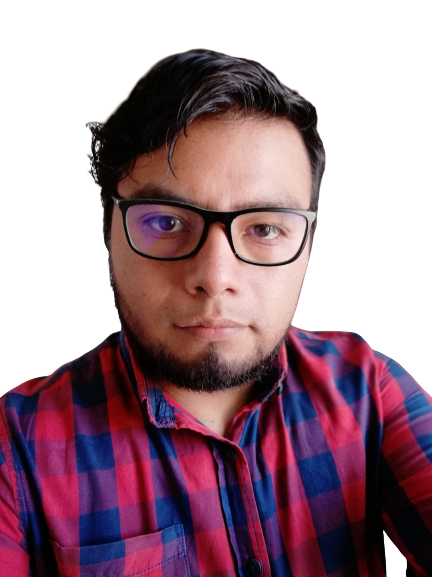

<!DOCTYPE html>
<html lang="en">
<head>
    <meta charset="UTF-8">
    <meta http-equiv="X-UA-Compatible" content="IE=edge">
    <meta name="viewport" content="width=device-width, initial-scale=1.0">
    <title>CV Luis</title>
    <link rel="stylesheet" href="estilo.css">
</head>
<body>

    <div class="left">
        <div>
            
        </div>

        <div>
            <h2>Luis Enrique Cervantes Aguilar</h2>
            <h4>Programador full stack</h4>
            <p><strong>Téfono:</strong> 5574719205</p>
            <p><strong>E-mail:</strong> 2517160133lcervantesa@gmail.com</p>
        </div>
        
    </div>
    <div class="right">
        <h4>Perfil profesional</h4>
        <p>Soy ingeniero en Tecnologías de la Información recién egresado pero, tengo basta experiencia en el 
            desarrollo de sitios web, quiero consolidar mi carrera ya que soy un profesional que no se da por 
            vencido tan fácilmente y quiero formar un equipo de desarrollo para dar fiabilidad sobre el trabajo 
            que desempeño.</p>
        <h4>Vida académica</h4>
        <ul>
            <li><p><strong> 2016 a 2018</strong> Técnico Superior Universitario en Tecnologías de la Información y Comunicación área de sistemas, Universidad Tecnológica de Tecámac, 
                Carretera Federal México - Pachuca Km 37.5, CP 55740, Col. Sierra Hermosa, 
                Tecámac, Estado de México.</p></li>
            <li><p><strong> 2019 a 2021</strong> Ingeniería en Tecnologías de la Información y Comunicación, 
                Universidad Tecnológica de Tecámac, Carretera Federal México - Pachuca Km 
                37.5, CP 55740, Col. Sierra Hermosa, Tecámac, Estado de México.</p></li>
        </ul>
        <h4>Experiencia laboral</h4>
        <ul>
            <li><p><strong> Diciembre 2018</strong>, Estadía profesional-programador java 
                Red-pro.mx-Ing. Francisco Sánchez Sánchez 
                Análisis de requerimientos, maquetado de interfaces, diseño de diagramas UML, 
                desarrollo e implementación del sitio web Red-pro.mx</p></li>
            <li>
                <p><strong> Abril 2021</strong>, Estadía profesional-programador php 
                    INGECA> Lic. René López de la Torre
                    Análisis de requerimientos, reingeniería del sistema SGE, migración de proyecto a 
                    MVC, implementación de geolocalización, consumo de API´s.</p> 
            </li>
        </ul>

        <h4>Cursos y certificaciones</h4>
        <ol>
            <li> Routing & Switching: Principios básicos de routing y switching</li>
            <li> IT Essentials.</li>
            <li>Administrador de Bases de Datos no relacionales.</li>
            <li>Analista de Datos</li>
        </ol>
        <h4>Habilidades</h4>
        <ul>
            <li>Ingles conversacional</li>
            <li>Trabajo en equipo</li>
            <li>liderazgo</li>
            <li>Proactivo</li>
            <li>Análisis</li>
            <li>Toma de deciciones</li>
            <li>Manejo de conflictos</li>
            <li>Asertividad</li>
        </ul>
    </div>
</body>
</html>